| [ Team LiB ] |
|
M15.2 FlowmetersAn orifice plate meter is the most common flow measurement device. A constricting orifice is placed between two flanges, as shown in Figure M15-4. As the fluid "speeds up" through the orifice, the pressure drops. The volumetric flow rate is related to the pressure drop across the orifice. As shown in the motivating example, a DP cell is typically used to measure the pressure drop; here, we use a manometer for illustrative purposes. Figure M15-4. Orifice meter.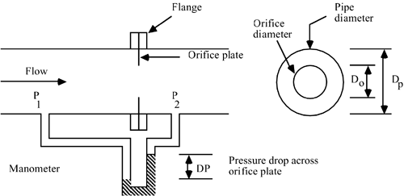 The equation for flow through an orifice is (McCabe and Smith, 1976) 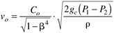 where vo is the average velocity through the orifice;
The volumetric flow rate, F, is 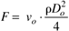 so the volumetric flow rate [combining Equations (M15.5) and (M15.6)] is 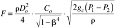 which can be written 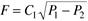 where 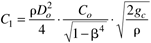 Notice that C1 will be a constant for a given system. Notice also that an orifice plate has a nonlinear input-output relationship. Consider the input to be the volumetric flow rate. The output is the differential pressure. After rearranging Equation (M15.8) we find Equation (M15.10) and notice that the pressure drop is a function of the square of the flow rate, 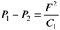 This means that the orifice plate gain (pressure drop change/flow rate change) increases with increasing flow. The orifice plate gain is 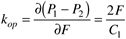 and we see that if the flow rate doubles, then the orifice plate gain doubles. If a controller is tuned to obtain good control when the flow rate is low, there is a chance that the control loop will become unstable when the flow rate is high, because of the increase in overall control loop gain, which is due to the increasing orifice plate gain. A common way of handling this varying gain problem is to use a square root extractor. Square Root ExtractorAssume that the input to a square root extractor is the pressure drop signal. The output is a 4- to 20-mA signal that is proportional to the square root of the pressure drop. Let Pop represent the signal entering the square root extractor and I represent the signal out of the square root extractor. The input-output relationship is then 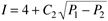 where C2 is a constant. The gain of the square root extractor is 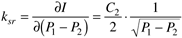 Notice that the square root extractor gain is inversely proportional to the square root of the pressure drop. The purpose of a square root extractor can be seen by combining Equations (M15.12) and (M15.10) to yield 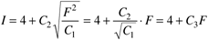 The gain between flow rate and the signal out of the square root extractor is 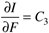 where 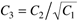. That is, we have a signal that is now directly proportional to the flow rate. |
| [ Team LiB ] |
|